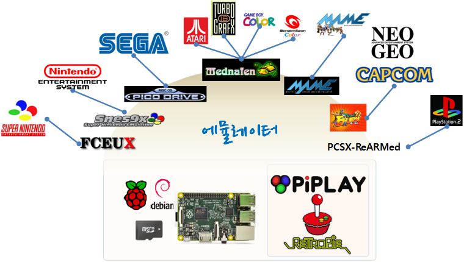

R 파이썬 소프트레이어 클라우드, xwMOOC
라즈베리 파이 게임
학습 목표
- 디지털 콘텐츠로서 게임을 학습한다.
- 라즈베리 파이에서 다양한 게임을 즐긴다.
0. 디지털 콘텐츠로서 게임
디지컬 콘텐츠로서 게임은 콘솔게임, PC게임, 온라인게임, 모바일게임으로 구분한다. 게임속 광고가 있기는 하지만 여기서는 논외로 하고 게임 자체에만 집중한다.
| 구분 | 게임 정의 |
|---|---|
| 콘솔게임 | 콘솔 게임기 및 게임 소프트웨어 (다운로드, 부가서비스 결제 포함) |
| PC게임 | PC게임 소프트웨어 (다운로드, 부가서비스 결제 포함) |
| 온라인게임 | 인터넷 연결을 요구하는 PC용 게임 (MMO, 소셜게임 등) |
| 모바일게임 | 태블릿과 스마트폰 등을 이용하는 모바일게임 |
세계 게임 시장 규모 및 전망 (2008~2017, 단위: 백만달러)
| 구분 | 2008년 | 2009년 | 2010년 | 2011년 | 2012년 | 2013년 | 2014년 | 2015년 | 2016년 | 2017년 |
|---|---|---|---|---|---|---|---|---|---|---|
| 콘솔게임 | 29349 | 29198 | 28721 | 27615 | 24928 | 25978 | 27629 | 28898 | 30231 | 31221 |
| PC게임 | 5255 | 5686 | 6318 | 6745 | 7017 | 7147 | 7183 | 7161 | 7098 | 6995 |
| 온라인게임 | 11109 | 13235 | 15724 | 18188 | 20407 | 22475 | 24522 | 26439 | 28358 | 30270 |
| 모바일게임 | 5024 | 5660 | 6460 | 7549 | 8757 | 9942 | 11065 | 12157 | 13257 | 14407 |
| 합계 | 50737 | 53779 | 57223 | 60097 | 61109 | 65542 | 70399 | 74655 | 78944 | 82893 |
출처: 2013년 해외콘텐츠시장 동향조사, KOCCA 연구보고서 13-48, PwC(2013)
설치형 혹은 소유형 게임인 콘솔게임과 PC게임을 합한 것이 서비스형인 온라인게임과 모바일게임과 비슷한 비율을 보이고 있다.
1. 콘솔 게임 에뮬레이터
1.1. 파이플레이(PiPLAY)
- 아케이드(MAME) - AdvanceMAME & MAME4ALL
- Capcom CPS I/II - Final Burn Alpha
- Neo Geo - GNGeo
- 플레이 스테이션 - PCSX-reARMed
- Genesis - DGen
- 닌텐도 - SNES9x
- NES - AdvMESS
- Gameboy - Gearboy
- Gameboy Advance - GPSP
- ScummVM
- 아타리 2600 - Stella
- Cavestory - NXEngine
- 코모도어 64 - VICE
- Mednafen - Game Gear, Neo Geo Pocket Color, Sega Master System, Turbo Grafx 16/PC-Engine
파이플레이스는 웹인터페이스를 제공해서 ifconfig eth0 명령어를 통해서 IP 주소를 알아내고 웹브라우져 주소창에 IP주소를 입력하면 콘솔 게임 ROM을 설치해서 게임을 즐길 수 있다.
1.2. 레트로파이(RetroPie)
아케이드 시스템, 게임 콘솔, 개인용 컴퓨터에 대한 연대기는 다음과 같다. 출처 : Arcade Systems, Game Consoles, and Home Computers in RetroPie
2. 라즈베리 파이를 게임 에뮬레이터로 만들기
과거 추억을 게임을 즐기기 위해서 필요한 것이 게임 하드웨어다. 하지만, 더이상 추억의 게임기를 생산하는 곳은 없다. 동네 오락실도 없어졌고 PC 방으로, 인터넷 카페 진화를 계속하고 있다. 그렇다고 추억의 게임을 즐기 못하는 것은 아니다. 게임 에뮬레이터를 사용하면 된다.
파이스토어, apt-get, wget을 통한 압축파일 전송 방식 등 다양한 방식으로 다양한 에뮬레이터를 설치한다. 수십개가 넘는 다양한 콘솔, 개인용 컴퓨터 게임등이 다양한 제조업체에 따라 개발되었기 때문에 발생한 자연스러운 현상이다. 하지만 목표는 모두 대동소이하다.

에뮬레이터별 설치 방식은 다음과 같다. 특히, 라즈베리 파이에는 OpenGL ES 코드를 실행시킬 수 있는 강력한 그래픽칩이 내장되어 있어 PCSX_ReARMed 에뮬레이터를 통해서 플레이스테이션 게임도 실행이 가능하다.
| 에뮬레이터명칭 | 설치방식 | 설치 명령어 | 실행명령어 |
|---|---|---|---|
| Mednafen(아타리 외) | apt-get | sudo apt-get install mednafen | mednafen /home/pi/homebrew.zip |
| FCEUX (닌텐도) | 압축해제 | wget http://raspberrypigaming.com/files/fceux.zip | ./fceux /home/pi/smb.nes |
| PiSNE (슈퍼닌텐도) | 압축해제 | wget http://raspberrypigaming.com/files/pisnes.zip | ./snes9x.gui |
| MAME4ALL (마메) | 압축해제 | wget http://raspberrypigaming.com/files/mame4all_ pi.zip | ./mame |
| FinalBurn Alpha(캡콤) | 압축해제 | http://sourceforge.net/projects/pifba/ 다운로드 | ./fbacapex |
| PCSX_ReARMed(플레이스테이션) | 파이스토어 | 게임 범주 아래서 PCSX_Rearmed 검색 | My Library에서 pcsx_rearmed 클릭 |
| PicoDrive(제네시스/메가드라이브) | 압축해제 | wget http://raspberrypigaming.com/files/picodrive.tgz | ./PicoDrive |
| Stella(아타리 2600) | apt-get | sudo apt-get install stella | stella |
2.1. 게임 롬(Rom) 설치
게임 에뮬레이터가 라즈베리 파이에 올라가면 실제로 게임기를 구입한 것과 마찬가지 효과를 가진다. 물론 최신 엑스박스, 플레이스테이션과 같은 최신 사양의 하드웨어는 아니지만 오래된 추억의 게임과 라즈베리 파이 하드웨어가 지원하는 정도의 게임을 돌리는 것은 문제가 되지 않는다. 게임 콘텐츠는 저작권 관련 이슈가 있어서, 저작권이 무료로 풀려서 누구나 무료로 사용할 수 있고, 수정하거나 변형하거나 할 수 있는 것이 있는 반면에 저작권이 게임콘텐츠 개발사나 게임기 개발업체, 게임개발자에 있는 있는 경우 무단으로 사용하게 되는 경우 저작권법에 따라 책임이 따를 수 있다. 구글이나 네이버 검색, 혹은 토렌츠나 이뮬같은 P2P 방식을 통해서 게임 롬을 구해서 사용하는 방법이 있지만, 이렇게 구한 게임 롬이 저작권법에 저촉되는 경우와 그렇지 않은 경우도 있으니 충분히 숙지하고 활용하기 바란다.
게임롬이 있다고 가정하면 다음 단계는 게임 롬을 라즈베리 파이에 전송하는 것이다. 전송하는 방식은 여러가지 있다.
- FTP(파일전송 프로토콜): 파일지라(Filezilla), WinSCP 프로그램을 많이 쓴다.
ifconfig명령어로 라즈베리 파이 IP주소를 알아내고, FTP 전송 프로그램으로 접속해서 끌어서-떨구기(Drag-and-Drop) 방식으로 게임롬 파일을 에뮬레이터 프로그램 전송한다.
- SCP (보안 복사): 쉘 유틸리트 중 하나로
cp명령어를 원격 컴퓨터에 확장한 것으로 게임롬 디렉토리에서 원격 컴퓨터에 복사한다.scp복사를 할 경우 원격 컴퓨터와 사용자명, 복사할 디렉토리를 지정하고 비밀번호를 통한 인증과정을 거친다.scp -r osmc@192.168.103.130:~/snapshot.png winsnapshot.png
- 웹 인터페이스: 파이플레이의 경우 웹인터페이스를 지원하기 때문에 이를 통해서 게임롬을 윈도우 탐색기나 파일관리자에서 끌어서-떨구기(Drag-and-Drop) 기능을 사용해서 라즈베리피 파이에 복사한다.
ifconfig명령어로 파이플레이가 설치된 라즈베리 파이 IP주소를 먼저 알아내야 한다.
3. 라즈베리 파이로 포팅된 게임 즐기기
게임을 개발할 때 목표 하드웨어 플랫폼을 설정하여 개발된 후에 순차적으로 다른 플랫폼으로 이식되는 경우가 종종있다. 콘솔이나 아케이드로 즐기던 게임을 개인용컴퓨터로 마이크로소프트 윈도우 시스템 포팅을 하거나 닌텐도나 플레이스테이션으로 포팅되는 경우를 자주 목격할 수 있다.
3.1. 동굴 이야기(Cave Story)
동굴 이야기(Cave Story, 도쿠츠 모노가타리, Doukutsu Monogatari )는 2004년 마이크로소프트 개인용 컴퓨터 플랫폼으로 처음 출시된 이후 닌텐도, 맥, 리눅스로 차례로 포팅되었다.
NXEngine는 동굴이야기의 공개 소프트웨어 복제품으로 2004년 무료로 공개되었다.
공개 소프트웨어 다운로드 - NXEngine 웹사이트 - 파이스토어 NXEngine를 다운로드 한다. - nxengine.zip Cave Story (nxengine) on the Raspberry Pi 사이트에서 다운로드한 후 설치한다. - cavestory.zip 설치 방법은 다음을 참조한다.
pi@raspberrypi ~ $ wget http://raspberrypigaming.com/files/cavestory.zip
pi@raspberrypi ~ $ unzip cavestory.zip
pi@raspberrypi ~ $ cd cavestory_rpi-master
pi@raspberrypi ~/cavestory_rpi-master $ ./nx3.2. 둠(Doom) 공개 버젼
울펜슈타인, 둠, 퀘이크, 레이지를 만든 이드 소프트웨어(id Software)가 공개 소프트웨어로 제공하지 않았다면, Bernd Kreimeier가 없었다면, 아마도 지금 PrBoom은 없었을 것이다. PrBoom은 둠(Doom)의 공개 소프트웨어 버젼이다. 둠에 대한 자세한 사항은 위키를 참조한다.
pi@raspberrypi ~ $ sudo apt-get install libsdl1.2debian libsdl-image1.2 libsdl-mixer1.2 libsdl-mixer1.2-dev libsdl-net1.2 libsdl-net1.2-dev timidity
pi@raspberrypi ~ $ sudo wget http://www.chocolate-doom.org/downloads/2.0.0/chocolate-doom-2.0.0.tar.gz
pi@raspberrypi ~ $ tar -xvf chocolate-doom-2.0.0.tar.gz
pi@raspberrypi ~ $ cd chocolate-doom-2.0.0
pi@raspberrypi ~/chocolate-doom-2.0.0 $ ./configure
pi@raspberrypi ~/chocolate-doom-2.0.0 $ make
pi@raspberrypi ~/chocolate-doom-2.0.0 $ sudo make install- libsdl1.2debian : Simple DirectMedia Layer (SDL)
- libsdl-image1.2 : Image loading for SDL
- libsdl-mixer1.2 : Audio mixer library for SDL
- libsdl-mixer1.2-dev : Audio mixer library development files
- libsdl-net1.2 : Network library for SDL
- libsdl-net1.2-dev : Network library development files
- timidity : MIDI, MOD and other sound file renderer
둠 커뮤니티에서 둠 프로그램에 상당한 수백가지 캠페인을 생성했다. 이러한 캠페인 파일을 WAD 파일로 부르고 다운로드해서 다양한 캠페인을 즐긴다. WAD 파일은 James’ Server에서 둠 아카이브에서 원하는 데이터 파일을 다운로드 받는다.
다운로드 받은 WAD 파일을 인자로 두고 chocolate-setup -iwad 명령어로 실행하고 환경설정하면 게임을 즐길 수 있다.
pi@raspberrypi ~/chocolate-doom-2.0.0 $ chocolate-setup -iwad DOOM1.WAD참고: Setting up Raspbian (and DOOM!)
3.3. 퀘이크(Quake) 공개 버젼
이드 소프트웨어의 퀘이크를 공개해 이 엔진 기반으로 리눅스로 포팅한 것이 Open Area 다. 라즈베리 파이 설치는 파이스토어를 참조한다. 오픈아레나 사이트에서 다운로드를 받을 수도 있다.
3.4. 마인크래프트 파이 공개 버젼
4. 리눅스 전용 게임
FreeCiv 문명
SuperTuX 슈퍼 마리오
Njam 팩맨
Galaga: Hyperspace
5. 컨트롤러 (Controller)
참조: Raspberry Pi Gaming: Design, create, and play all kinds of video games on your Raspberry Pi computer